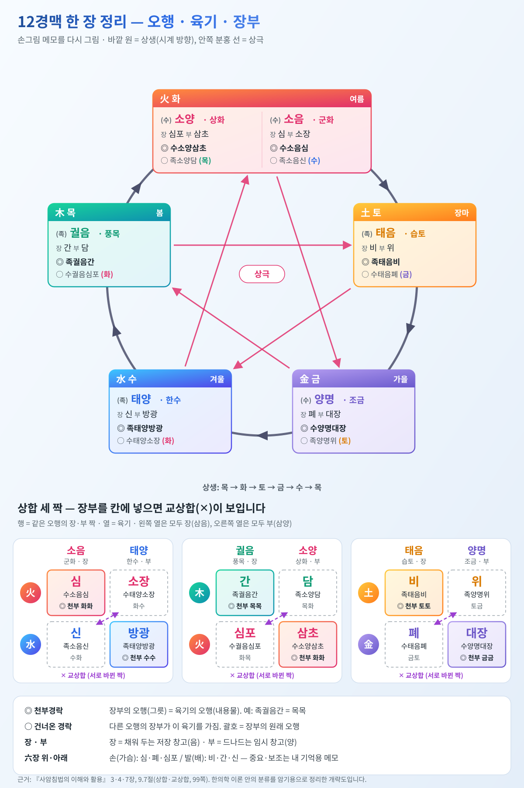

이 글을 읽기 전에
오수혈 60개는 표로만 보면 규칙이 없어 보이지만, 순서와 자리에는 꽤 뚜렷한 규칙이 있고 이름에도 반복되는 글자가 있습니다. 이 글은 그 규칙을 먼저 잡고 나머지를 채우는 순서로 정리했습니다.
근거의 수준: 정·형·수·경·합이 물길의 다섯 단계라는 설명은 『사암침법의 이해와 활용』 54–59쪽에 따른 것입니다. 반면 혈 이름 하나하나의 뜻풀이는 강의나 참고 도서에서 확인한 내용이 아니라, 전통적으로 알려진 풀이를 암기용으로 간추린 것입니다. 주석서마다 풀이가 다르고(여태가 특히 그렇습니다), 이름의 뜻이 혈의 효과를 증명하는 것도 아닙니다. 외우는 데 쓰는 도구로만 보세요. 7장(오행)과 8장(육기)은 같은 참고 도서의 3·4·7장을, 9장의 상합·교상합은 9.7절을 기준으로 쓰고 쪽수를 표시했습니다.
1. 왜 이 순서인가: 물길
정·형·수·경·합은 물이 솟아나 바다에 이르는 과정에 빗댄 이름입니다.
| 순서 | 한자 | 뜻 | 물길의 단계 | 몸에서의 자리 |
|---|---|---|---|---|
| 1 정 | 井 | 우물 | 샘에서 물이 솟는다 | 손가락·발가락 끝 |
| 2 형 | 滎 | 실개천 | 가늘게 졸졸 흐른다 | 손가락·발가락 뿌리 근처 |
| 3 수 | 輸 | 물을 대다, 나르다 | 물이 모여 실어 나른다 | 손목·발목 쪽 손발 |
| 4 경 | 經 | 지나가다 | 큰 물줄기가 되어 길게 흐른다 | 손목·발목 근처나 그 위 |
| 5 합 | 合 | 합쳐지다 | 강이 바다로 들어간다 | 팔꿈치·무릎 |
그래서 오수혈은 경맥이 실제로 흐르는 방향과 상관없이 언제나 손끝·발끝에서 시작해 팔꿈치·무릎에서 끝납니다. 끝으로 갈수록 물이 얕고 가늘며, 몸통 쪽으로 올수록 깊고 넓다고 본 것입니다.
2. 자리의 규칙: 네 묶음
12경맥을 따로 외우지 말고 팔 안쪽·팔 바깥쪽·다리 바깥과 앞·다리 안쪽 네 묶음으로 보면, 같은 묶음 안에서는 다섯 혈의 높이가 거의 같습니다.
| 묶음 | 경맥 | 정 | 형 | 수 | 경 | 합 |
|---|---|---|---|---|---|---|
| 팔 안쪽 (음경) | 폐·심포·심 | 손가락 끝 | 손바닥 | 손목 주름 | 손목 조금 위 | 팔꿈치 주름 |
| 팔 바깥쪽 (양경) | 대장·삼초·소장 | 손톱 모서리 | 손가락 뿌리 관절 앞 | 그 관절 뒤 | 손목 근처 | 팔꿈치 |
| 다리 바깥·앞 (양경) | 위·담·방광 | 발톱 모서리 | 발가락 뿌리 관절 앞 | 그 관절 뒤 | 발목 근처 | 무릎 |
| 다리 안쪽 (음경) | 비·간·신 | 발톱 모서리 | 발가락 뿌리 근처 | 발등·발 안쪽 | 발목 근처 | 무릎 안쪽 |
규칙에서 벗어나는 혈
- 용천(신경 정혈): 발가락 끝이 아니라 발바닥에 있습니다. 60혈 가운데 유일합니다.
- 연곡(신경 형혈): 발가락 뿌리가 아니라 발 안쪽 한가운데에 있습니다.
- 지구·양보·복류(삼초·담·신의 경혈): 손목·발목에 붙어 있지 않고 2~4촌 위로 올라가 있습니다.
3. 이름의 규칙: 반복되는 글자
합혈에는 물 이름이 붙습니다. 강이 바다로 들어가는 자리이기 때문입니다. 12개 가운데 8개가 그렇습니다.
| 글자 | 뜻 | 합혈 |
|---|---|---|
| 澤 (택) | 못, 늪 | 척택(폐), 곡택(심포) |
| 池 (지) | 연못 | 곡지(대장) |
| 海 (해) | 바다 | 소해(심), 소해(소장) |
| 泉 (천) | 샘 | 음릉천(비), 양릉천(담), 곡천(간) |
그 밖에 자주 나오는 글자
- 曲(곡) = 굽히는 관절. 곡택·곡지·곡천은 모두 팔꿈치나 무릎을 굽혔을 때 생기는 주름 근처에 있습니다.
- 陰(음) = 안쪽, 陽(양) = 바깥쪽. 음릉천은 무릎 안쪽, 양릉천은 무릎 바깥쪽입니다. 음곡·양곡·양계·양보도 같은 식으로 읽습니다.
- 少(소) = 정혈. 소상·소충·소택은 모두 손가락 끝입니다. 물이 아직 적다는 뜻으로 기억하면 됩니다. (소부·소해는 예외로, 심경의 "소음"에서 온 글자입니다.)
- 衝(충) = 손끝. 소충·중충·관충은 모두 손가락 끝의 정혈입니다. (태충은 발등에 있는 예외입니다.)
- 太·大(태·대) = 음경의 수혈. 태연(폐)·대릉(심포)·태백(비)·태충(간)·태계(신). 음경의 수혈 6개 가운데 심경의 신문만 빠집니다.
- 형혈 → 수혈은 숫자와 앞뒤로 이어집니다. 이간(둘째 마디) → 삼간(셋째 마디), 전곡(앞 골짜기) → 후계(뒤 시내).
4. 60혈 이름의 뜻
묶음 순서대로 적었습니다. 정·형·수·경·합 순서입니다.
팔 안쪽 — 폐·심포·심
| 경맥 | 정 | 형 | 수 | 경 | 합 |
|---|---|---|---|---|---|
| 폐 | 소상 少商 — 商은 폐(金)의 소리. 작은 금의 기운 | 어제 魚際 — 물고기 배처럼 볼록한 엄지 두덩의 가장자리 | 태연 太淵 — 크고 깊은 못. 맥이 뛰는 자리 | 경거 經渠 — 물이 지나가는 도랑 | 척택 尺澤 — 팔뚝(尺)에 있는 못 |
| 심포 | 중충 中衝 — 가운뎃손가락 끝으로 솟구침 | 노궁 勞宮 — 일하는 손의 한가운데 궁전 | 대릉 大陵 — 큰 언덕. 손목뼈의 도드라진 곳 | 간사 間使 — 두 힘줄 사이의 심부름꾼 | 곡택 曲澤 — 굽은 곳(팔꿈치)의 못 |
| 심 | 소충 少衝 — 소음경이 솟구치는 곳 | 소부 少府 — 소음경의 곳간 | 신문 神門 — 정신(神)이 드나드는 문 | 영도 靈道 — 마음(靈)이 지나는 길 | 소해 少海 — 소음경의 바다 |
팔 바깥쪽 — 대장·삼초·소장
| 경맥 | 정 | 형 | 수 | 경 | 합 |
|---|---|---|---|---|---|
| 대장 | 상양 商陽 — 金(商)의 양경이 시작되는 곳 | 이간 二間 — 둘째 자리(마디) | 삼간 三間 — 셋째 자리(마디) | 양계 陽谿 — 바깥쪽의 시내. 손목의 오목한 곳 | 곡지 曲池 — 굽은 곳(팔꿈치)의 연못 |
| 삼초 | 관충 關衝 — 관문에서 솟구침 | 액문 液門 — 진액이 드나드는 문 | 중저 中渚 — 물 가운데의 작은 섬 | 지구 支溝 — 팔뚝(支)의 도랑. 두 뼈 사이 | 천정 天井 — 하늘 우물. 팔꿈치 뒤의 오목한 곳 |
| 소장 | 소택 少澤 — 작은 못 | 전곡 前谷 — 관절 앞의 골짜기 | 후계 後谿 — 관절 뒤의 시내 | 양곡 陽谷 — 바깥쪽의 골짜기 | 소해 小海 — 소장경의 바다 |
다리 바깥·앞 — 위·담·방광
| 경맥 | 정 | 형 | 수 | 경 | 합 |
|---|---|---|---|---|---|
| 위 | 여태 厲兌 — 풀이가 가장 엇갈리는 이름. 兌를 문·입으로 보아 "위경의 끝에 있는 문"으로 풀기도 함 | 내정 內庭 — 안뜰. 발가락 사이 안쪽 | 함곡 陷谷 — 움푹 꺼진 골짜기 | 해계 解谿 — 신발 끈을 푸는 자리(발목 앞)의 시내 | 족삼리 足三里 — 무릎 아래 3촌(里) |
| 담 | 족규음 足竅陰 — 발에 있는, 음으로 통하는 구멍 | 협계 俠谿 — 두 발가락 사이에 낀 시내 | 족임읍 足臨泣 — 눈물을 내려다봄. 눈 질환에 쓰던 데서 온 이름 | 양보 陽輔 — 바깥쪽 버팀뼈(종아리뼈) 옆 | 양릉천 陽陵泉 — 바깥쪽 언덕 아래의 샘 |
| 방광 | 지음 至陰 — 음에 이르는 곳. 양경이 끝나고 신경(음)으로 넘어감 | 족통곡 足通谷 — 골짜기를 지나감 | 속골 束骨 — 묶인 뼈. 새끼발가락 뿌리뼈 | 곤륜 崑崙 — 높은 산. 바깥 복사뼈를 빗댐 | 위중 委中 — 굽힌(委) 곳의 한가운데. 오금 중앙 |
다리 안쪽 — 비·간·신
| 경맥 | 정 | 형 | 수 | 경 | 합 |
|---|---|---|---|---|---|
| 비 | 은백 隱白 — 숨은 흰빛. 발바닥과 발등의 살빛 경계 | 대도 大都 — 큰 도읍. 엄지발가락의 볼록한 곳 | 태백 太白 — 크게 흰 곳 | 상구 商丘 — 안쪽 복사뼈라는 언덕(丘) 아래 | 음릉천 陰陵泉 — 안쪽 언덕 아래의 샘 |
| 간 | 대돈 大敦 — 크고 두툼함. 엄지발가락 | 행간 行間 — 두 발가락 사이를 지나감 | 태충 太衝 — 크게 솟구침. 맥이 뛰는 자리 | 중봉 中封 — 두 힘줄 사이에 봉해진 곳 | 곡천 曲泉 — 굽은 곳(무릎)의 샘 |
| 신 | 용천 湧泉 — 솟아오르는 샘 | 연곡 然谷 — 연골(然骨, 발 안쪽 뼈) 아래의 골짜기 | 태계 太谿 — 큰 시내 | 복류 復溜 — 다시 흐름 | 음곡 陰谷 — 안쪽의 골짜기. 오금 안쪽 |
두 소해는 한자가 다릅니다. 심경은 少海, 소장경은 小海이고, 자리도 팔꿈치 안쪽과 바깥쪽으로 다릅니다. 본문에서 음소해·양소해로 구분한 그 둘입니다.
5. 외우는 순서 제안
- 자리 규칙부터. 2장의 네 묶음 표를 먼저 익혀, 혈 이름을 몰라도 "대장경의 형혈은 둘째손가락 뿌리 관절 앞"이라고 짚을 수 있게 합니다.
- 합혈 12개. 팔꿈치와 무릎에 있고 물 이름이 많아 가장 쉽습니다.
- 정혈 12개. 손가락·발가락 순서대로 외웁니다. 손은 엄지(소상)·검지(상양)·중지(중충)·약지(관충)·새끼(소충, 소택), 발은 엄지(은백, 대돈)·둘째(여태)·넷째(족규음)·새끼(지음)·발바닥(용천)입니다.
- 나머지 형·수·경. 3장의 글자 규칙(太·大, 이간→삼간, 전곡→후계)으로 묶이는 것부터 채웁니다.
자리는 본문의 경맥별 오수혈 위치 그림과 함께 보면 빨리 잡힙니다.
6. 장부 한눈에 보기
오수혈 표에 나오는 장부 이름이 낯설다면 이 표로 묶어 보세요. 한의학에서 장(臟)은 속이 찬 음의 기관, 부(腑)는 속이 빈 양의 기관이고, 장과 부가 한 쌍으로 짝을 이룹니다. 같은 행의 장과 부는 오행이 같습니다. 다만 오수혈 혈 하나하나에 붙는 오행(예: 정혈이 음경은 木, 양경은 金)은 음경과 양경이 서로 달라서, 이 표의 오행과는 별개입니다. 혈별 오행은 본문 4장의 "오수혈의 오행" 표를 보세요.
근거의 수준: 이 표는 전통 한의학의 일반적인 풀이를 암기용으로 간추린 것이고, 강의나 참고 도서로 대조한 내용이 아닙니다. 한의학의 장부는 해부학 장기와 똑같지 않습니다. 이름의 뜻이나 역할이 검사 결과를 증명하는 것도 아니니, 이름과 짝을 외우는 도구로만 쓰세요.
| 역할 (장) | 장 | 오행 | 부 | 역할 (부) |
|---|---|---|---|---|
| 피를 저장하고 기가 막힘없이 퍼지게 조절함, 근육과 눈을 맡음 | 간 | 목 | 담 | 담즙을 저장·배설해 소화를 돕고 결단을 맡음 |
| 피를 돌리고 정신활동을 맡음 | 심 | 화 | 소장 | 위에서 내려온 것을 맑은 것(영양)과 탁한 것으로 가름 |
| 심장을 싸서 보호하고 대신 받아냄 | 심포 | 화 | 삼초 | 기와 물이 오가는 통로(가슴·윗배·아랫배 세 구역) |
| 영양을 뽑아 온몸에 보냄(운화), 피가 새지 않게 붙듦, 살과 팔다리를 맡음, 수분 대사를 도움 | 비 | 토 | 위 | 음식물을 받아 삭임 |
| 호흡을 맡고, 기를 온몸에 퍼뜨림, 피부와 털, 수분의 길을 조절함 | 폐 | 금 | 대장 | 남은 찌꺼기에서 수분을 흡수하고 대변으로 내보냄 |
| 물 조절, 타고난 기운(정)을 간직함, 뼈와 골수를 맡음, 숨을 깊이 받아들임 | 신 | 수 | 방광 | 소변을 저장하고 내보냄 |
알아 둘 점
- 한자와 쉬운 말: 비(脾)는 지라, 신(腎)은 콩팥, 심포(心包)는 심장을 싼 막, 삼초(三焦)는 몸통의 세 구역, 담(膽)은 쓸개입니다.
- 화(火)가 두 쌍: 심·소장의 화는 군화(君火), 심포·삼초의 화는 상화(相火)라고 구분해 부릅니다.
- 삼초는 개념입니다. 눈에 보이는 장기가 아니라 기와 물이 오가는 길이어서, 역할 칸이 다른 부보다 추상적입니다.
7. 오행: 장부에 붙은 다섯 가지 성질표
세상 만물을 다섯 가지 성질로 나눈 것이 오행(목·화·토·금·수)입니다. 6장 표의 "오행" 칸은 이 다섯 이름을 장부에 하나씩 붙여 둔 것입니다. "간은 목이다"는 간이 나무라는 뜻이 아니라, 간을 나무 같은 성질(뻗어 나가고 펼치는 쪽)의 무리로 분류한다는 뜻입니다.
근거의 수준: 이 장은 『사암침법의 이해와 활용』 3장(33–40쪽)을 기준으로 했습니다. 다만 이것은 한의학 이론 안의 분류이지, 간이 실제로 나무처럼 작동한다는 증거가 아닙니다. 맛·감정·몸 부위의 짝은 외우는 틀로만 쓰세요.
오행은 물이 변해 가는 과정의 이름입니다 (33쪽)
책은 오행을 "음양의 변화 과정을 설명하는 도구"라고 합니다. 물(水)이 불(火)로 변해 가는 도중이 목(木)이고, 불이 다시 물로 돌아오는 도중이 금(金)입니다. 이 변화의 한가운데에 토(土)를 세워 다섯이 됩니다. 앞쪽 절반인 목·화는 흩어지는 방향(양), 뒤쪽 절반인 금·수는 모으는 방향(음)입니다. 행(行)이라는 글자는 이렇게 모였다 흩어졌다 하는 움직임을 뜻합니다.
다섯 가지 성질 (34–35쪽)
- 목(木) — 솟아오르려는 힘. 용수철을 누르면 반발력이 커지듯, 눌릴수록 튀어 오르려는 성질입니다. 수가 운동을 시작하는 처음 모습이고, 소년기에 해당합니다.
- 화(火) — 흩어져 퍼지는 힘. 목의 힘이 다해 가면 가지가 뻗고 꽃이 핍니다. 겉모양은 커지지만 속은 약해지고 비어 갑니다. 청년기에 해당합니다.
- 토(土) — 가운데에서 조절하는 힘. 퍼지지도 모이지도 않는 중화(中和)의 힘이며, 만물을 번식시키고 살찌게 합니다. 다른 네 오행의 변화를 중재합니다.
- 금(金) — 안으로 거두어들이는 힘. 목이 겉으로 퍼지려는 첫 단계라면, 금은 안으로 갈무리하려는 첫 단계입니다. 중년기에 해당합니다.
- 수(水) — 생명의 바탕. 사람에게는 정(精), 식물에게는 씨의 핵에 해당하는 본질입니다. 얼기도 하고 증발하기도 하며 어떤 모양으로든 바뀌는 성질 때문에 변화의 중심으로 봅니다. 노년기에 해당합니다.
배당표 (40쪽)
| 오행 | 장 · 부 | 계절·방위 | 색·맛 | 기후 | 감정 | 몸 |
|---|---|---|---|---|---|---|
| 목 | 간 · 담 | 봄, 동 | 청, 신맛 | 풍(바람) | 분노 | 손톱 |
| 화 | 심, 심포 · 소장, 삼초 | 여름, 남 | 적, 쓴맛 | 열(더위) | 기쁨 | 얼굴 색채 |
| 토 | 비 · 위 | 장하(늦여름), 중앙 | 황, 단맛 | 습(눅눅함) | 생각 | 입술 |
| 금 | 폐 · 대장 | 가을, 서 | 백, 매운맛 | 건조 | 근심 | 털 |
| 수 | 신 · 방광 | 겨울, 북 | 흑, 짠맛 | 한(추위) | 공포 | 머리카락 |
책에는 이 밖에 소리(목=호통, 화=웃음, 토=노래, 금=울음, 수=신음), 곡식(팥·수수·조·쌀·콩), 자동차 비유(목=액셀, 화=엔진, 토=핸들, 금=브레이크, 수=오일)도 실려 있습니다.
서로 낳고 서로 누르는 관계 (37–39쪽)
- 상생(相生, 실선): 앞의 것이 뒤의 것을 낳아 키웁니다. 목→화→토→금→수→목 순서로, 계절이 바뀌는 순서와 같습니다.
- 상극(相克, 점선): 한 오행이 지나치게 커지지 않도록 눌러 줍니다. 목→토→수→화→금→목 순서입니다. 책은 상극이 없으면 목의 기운이 한없이 커져 화를 낳지 못할 것이라며, 눌러 주는 작용도 균형에 필요하다고 설명합니다.
알아 둘 점
- 장부 오행과 오수혈 혈 하나하나의 오행은 별개입니다. 이 장의 오행은 장부에 붙인 이름표이고, 혈별 오행(정혈이 음경은 木, 양경은 金)은 본문 4장의 "오수혈의 오행" 표를 보세요.
- 그림과 표에서 화(火)는 심·소장 한 쌍에 심포·삼초 한 쌍이 더해져 두 쌍입니다(6장의 군화·상화).
8. 육기: 여섯 가지 날씨 같은 기운
경락 이름에 들어 있는 태음·소음·궐음·태양·양명·소양을 풀면 육기(六氣)가 나옵니다. 책은 오행을 "하늘의 기운", 육기를 "땅의 기운"이라고 합니다. 육기는 풍(바람)·열(더위)·습(눅눅함)·조(건조)·한(추위)·화(불) 같은 여섯 가지 날씨 같은 기운입니다(41쪽).
근거의 수준: 이 장은 같은 책의 4장(41–50쪽)과 7장(67–82쪽)을 기준으로 했습니다. 책은 육기를 바이오리듬이나 심리 상태(예: 양명=신체리듬의 불만족)로 넓게 풀어 설명하기도 하는데, 근거를 확인할 수 없는 은유라서 옮기지 않았습니다. 또 책은 "왜 하필 폐에 태음이 담기는가"를 이유로 설명하지 않고 그렇게 정해져 있다고만 합니다. 12가지 대응은 이론 안의 약속으로 보고 외우세요.
그릇과 내용물 (41쪽)
책의 비유는 오행은 그릇, 육기는 그릇에 담긴 내용물입니다. 같은 봄이라도 따뜻한 날, 추운 날, 습한 날, 건조한 날이 있듯이, 같은 오행에도 담긴 기운이 다를 수 있다는 것입니다. 책은 "장부를 상징하는 오행에 그 장부의 내적인 속성을 표현한 것이 육기"이고, 이것이 극적으로 드러난 것이 경락이라고 합니다. 그래서 12경락 = 장부 오행(그릇) + 육기(내용물) 입니다.
여섯 육기 (48–50쪽)
| 육기 | 이름 | 오행 | 날씨로 떠올리면 |
|---|---|---|---|
| 태음 | 습토(濕土) | 토 | 눅눅함 |
| 양명 | 조금(燥金) | 금 | 건조함 |
| 소음 | 군화(君火) | 화 | 계속 달아 있는 열 |
| 태양 | 한수(寒水) | 수 | 추위 |
| 궐음 | 풍목(風木) | 목 | 바람 |
| 소양 | 상화(相火) | 화 | 왔다 갔다 하는 열 |
표리로 짝이 되는 두 육기가 같은 단계로 묶입니다: 태음·양명, 소음·태양, 궐음·소양. 6장 표에서 같은 줄에 놓인 장·부(비·위, 심·소장, 간·담 등)와 같은 짝입니다.
12경락의 그릇과 내용물 (7장, 67–82쪽)
| 육기 | 경락 | 그릇 + 내용물 | 책의 설명 |
|---|---|---|---|
| 태음 | 족태음비경 | 토 + 습토 | 같은 토끼리 만남. 소화·흡수를 맡는 창고 |
| 태음 | 수태음폐경 | 금 + 습토 | 금 그릇에 태음의 기운 |
| 양명 | 족양명위경 | 토 + 조금 | 토 그릇에 건조한 기운. 음식을 받아 삭임 |
| 양명 | 수양명대장경 | 금 + 조금 | 같은 금끼리 만남. 비워야 변화가 가능함 |
| 소음 | 수소음심경 | 화 + 군화 | 같은 화끼리 만남 |
| 소음 | 족소음신경 | 수 + 군화 | 물 그릇에 따뜻한 열이 깃듦 |
| 태양 | 수태양소장경 | 화 + 한수 | 혈(血)을 상징함 |
| 태양 | 족태양방광경 | 수 + 한수 | 같은 수끼리 만남. 찬 바다 |
| 궐음 | 족궐음간경 | 목 + 풍목 | 같은 목끼리 만남 |
| 궐음 | 수궐음심포경 | 화(상화) + 풍목 | 상화 그릇에 궐음 |
| 소양 | 족소양담경 | 목 + 상화 | 목 그릇에 상화 |
| 소양 | 수소양삼초경 | 화(상화) + 상화 | 같은 상화끼리 만남 |
알아 둘 점
- 책은 그릇과 내용이 같은 여섯 경락(비·대장·심·방광·간·삼초)을 "천부경락"이라 부릅니다. 이 여섯은 에너지의 크기는 크지만 활동은 적은(정적인) 쪽이고, 그릇과 내용이 섞인 나머지는 크기는 작아도 활동성이 크다고 책은 설명합니다(68쪽, 72쪽).
- 섞인 여섯은 그릇과 내용이 서로 뒤바뀐 쌍으로 짝지어집니다: 폐(금+토)와 위(토+금), 소장(화+수)과 신(수+화), 심포(화+목)와 담(목+화). 책은 이런 관계를 교상합(交相合)이라 부르고, 육기와 장부 오행이 서로 바뀐 경락이라고 설명합니다(9.7.2, 99쪽). 9장 그림 아래쪽에서 ✕로 표시했습니다.
- 책 안에서 소장의 표기가 엇갈립니다. 7장은 제목에 "화수"(화 그릇+수 내용)라고 쓰고 설명에서는 "물그릇에 불이 담긴 것"이라고 하며(74쪽), 4장은 "소장 화 안에 수기가 흘러가는 경락"이라고 합니다(45쪽). 어느 쪽이 의도인지는 책만으로 판단할 수 없어, 위 표에는 제목 표기를 따랐습니다.
- 손(手) 경락은 형이상학적이고 양적이며, 발(足) 경락은 형이하학적이고 음적이라는 책의 설명도 있습니다(42쪽).
9. 한 장으로 보기: 오행·육기·장부
6–8장의 내용을 그림 한 장에 모았습니다.

휴대폰에서는 그림만 따로 열기를 눌러 손가락으로 확대해 보면 편합니다.

위쪽 그림: 다섯 개의 방
그림 위쪽의 다섯 칸을 다섯 개의 방이라고 생각해 보세요. 목·화·토·금·수, 오행의 방입니다. 방마다 계절이 붙어 있습니다. 목은 봄, 화는 여름, 토는 장마, 금은 가을, 수는 겨울입니다.
- 바깥 원은 계절이 도는 길입니다. 봄 다음에 여름, 여름 다음에 장마가 오듯, 앞의 방이 다음 방을 키워 줍니다. 이것이 상생입니다.
- 안쪽 별 모양 선은 눌러 주는 길입니다. 한 방이 너무 커지지 않도록 건너편 방이 눌러 줍니다. 이것이 상극입니다.
- 방마다 식구가 둘 삽니다. 하나는 채워 두는 창고인 장, 하나는 들어왔다 나가는 창고인 부입니다. 목 방에는 간(장)과 담(부)이 삽니다.
- 방마다 그 방의 날씨가 있습니다. 목 방은 바람(풍목), 토 방은 눅눅함(습토), 금 방은 건조함(조금), 수 방은 추위(한수)입니다. 이 날씨의 이름이 경락 이름에 들어 있는 궐음·태음·양명·태양입니다. 화 방에는 열이 두 가지(군화의 소음, 상화의 소양)라서 날씨도 둘, 식구도 두 쌍입니다.
- ◎ 표시는 자기 방의 날씨를 그대로 가진 식구입니다. 간은 목 방에 살고 날씨도 목 방의 궐음이라서 족궐음간경입니다. 이런 경락을 천부경락이라고 합니다. 날씨 이름 앞의 작은 (수)·(족)은 이 ◎ 경락이 손 경락인지 발 경락인지를 알려 줍니다.
- ○ 표시는 다른 방에 살면서 이 방의 날씨를 가진 식구입니다. 심포는 화 방 식구인데 날씨는 목 방의 궐음을 가져서 수궐음심포경이 됩니다. 괄호 안 글자가 그 식구가 사는 원래 방입니다.
아래쪽 그림: 짝이 되는 날씨 세 쌍
여섯 날씨는 둘씩 짝을 짓습니다. 태음과 양명, 소음과 태양, 궐음과 소양입니다. 책은 이 짝을 상합이라고 부릅니다. 아래쪽에는 짝마다 네 칸짜리 표를 그렸습니다. 가로줄은 같은 방에 사는 식구(예: 화 방의 심과 소장), 세로줄은 날씨(예: 소음과 태양)입니다. 이렇게 놓으면 세 가지가 보입니다.
- 왼쪽 칸은 모두 장, 오른쪽 칸은 모두 부입니다. 이름에 "음"이 들어간 날씨(태음·소음·궐음)는 장의 경락이고, "양"이 들어간 날씨(양명·태양·소양)는 부의 경락입니다.
- 진한 테두리 칸(◎)은 자기 방의 날씨를 가진 식구입니다. 표마다 대각선으로 두 칸이 있습니다.
- 점선 칸 두 개는 방과 날씨를 서로 바꾼 짝입니다. 보라색 화살표로 이었습니다. 소장은 화 방에 살면서 수 방의 날씨(태양)를 가지고, 신은 수 방에 살면서 화 방의 날씨(소음)를 가집니다. 폐와 위, 심포와 담도 같습니다. 책은 이런 짝을 교상합이라고 부릅니다.
외울 것은 세 가지입니다. 이름에 음이 있으면 장, 양이 있으면 부. 사는 방과 날씨가 같으면 ◎. 나머지 여섯은 둘씩 서로 바꾼 짝.
근거의 수준: 오행·육기·상합·교상합은 『사암침법의 이해와 활용』(3·4·7장, 99쪽)을 따랐습니다. 한의학 이론 안의 분류를 외우기 쉽게 그린 것이고, 몸이 실제로 그렇게 작동한다는 증거는 아닙니다. 그림 아래 범례의 "중요·보조"는 개인 기억 메모입니다.